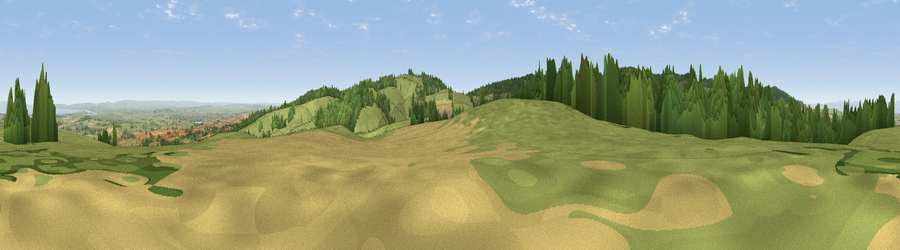

Viewpoint near Enmore
#4713 in England · top 16% of its area beats it · near EnmoreWhere it is
The exact computed spot (ST 20875 35125). Click the marker for map links.
The view, rendered

A 360° render of this exact spot computed from the terrain model, tree cover and land cover — summer colours, afternoon light, calibrated against photographs of famous viewpoints. Real trees, hedges and buildings will differ in detail.
The panorama
Grey silhouette: terrain skyline in each direction (720 bearings, Earth curvature and refraction included). Dashed green: skyline with trees (+15 m) and buildings (+8 m) as obstacles. Blue strip: how far the ground is visible on each bearing.
Where the view opens
Wedge length = distance to the farthest visible ground on that bearing (vegetation-aware). Rings at 10, 25 and 50 km.
What fills the view
54% grassland · 24% woodland · 18% cropland · 3% water · 1% built-up
Angular shares of the visible panorama (visual magnitude), not map area. Landscape diversity 0.50 (0–1 Shannon).
Key numbers
More beautiful places nearby
The staircase of upgrades: each row has a higher view potential than everything closer. Driving times are estimates from straight-line distance, calibrated against real road routing — check an actual route before setting out.
| Place | Direction | Drive | Score |
|---|---|---|---|
| Viewpoint near Over Stowey | NW · 1 km | ~2 min | 72.4 |
| Viewpoint near Enmore | N · 1 km | ~2 min | 77.6 |
| Cothelstone Hill | SW · 3 km | ~7 min | 82.1 |
| Viewpoint near West Bagborough | WSW · 3 km | ~8 min | 84.3 |
| Wills Neck | W · 4 km | ~10 min | 85.7 |
| Viewpoint near Holford | NW · 9 km | ~17 min | 85.9 |
| Viewpoint near West Quantoxhead | NW · 10 km | ~20 min | 87.8 |
| Viewpoint near West Quantoxhead | NW · 11 km | ~21 min | 88.7 |
51.10994, -3.13166 · source: screening · position refined by local search. Computed location — check access rights before visiting.